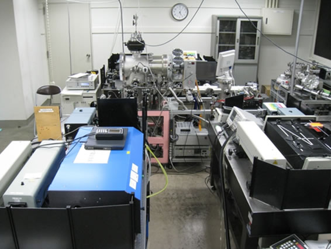
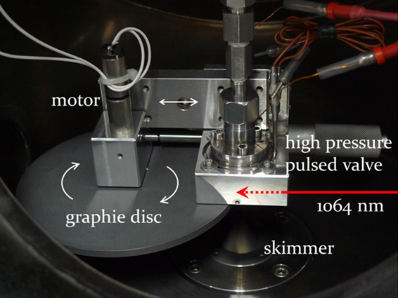
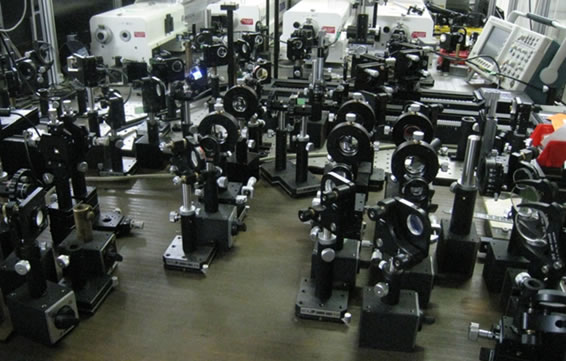
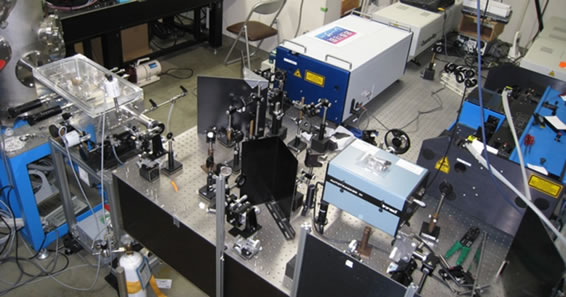
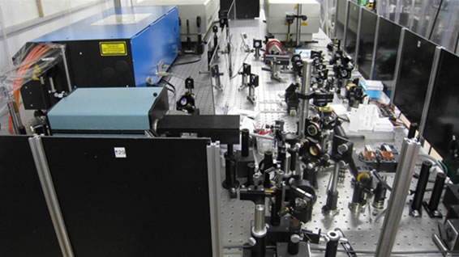
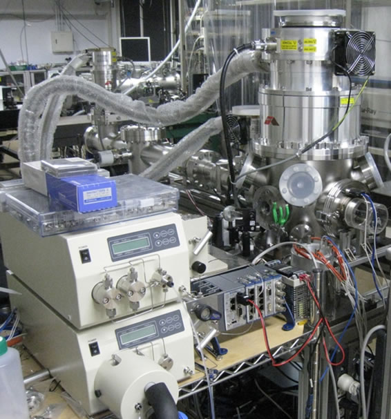
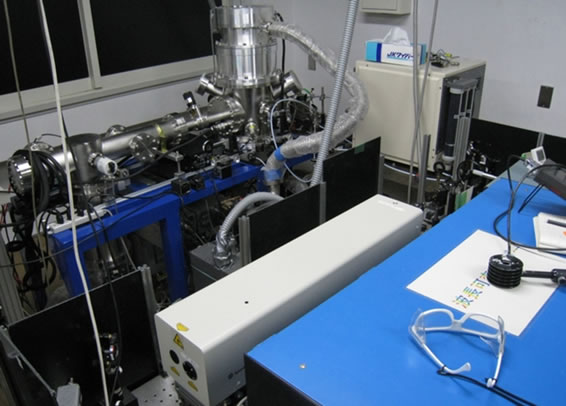

Laser Desorption Supersonic Jet Spectrometer
|

This device performs supersonic jet cooling of hardly volatile components vaporized by laser desorption method and performs multiple resonance laser spectroscopy.
The ultraviolet laser on the front, left and right, the time-of-flight mass spectrometer in the center. |
|

The heart part of the laser desorption method
Apply a sample mixed with a matrix agent to the side wall of the graphite disk and evaporate the sample using instantaneous overheating with near infrared laser light. The vaporized molecules are jet cooled by collision with rare gas atoms ejected from the pulse valve and go through the underlying skimmer into supersonic molecular beams. |
Picosecond time resolved spectroscopic apparatus
|

Picosecond laser used for picosecond time-resolved spectroscopy in the back, optical element necessary for guiding the picosecond laser to the spectroscopic apparatus in front.
Many optical elements are required. If you are unfamiliar it may look like a mountain of garbage. |

Time-of-flight mass spectrometer used in picosecond time-resolved spectroscopy.
Supersonic molecular beam from the top, laser beam from the front and rear windows enter. Ions will fly to the left. |
Tunable vacuum ultraviolet spectrometer
|

The light of the two lasers in the upper right is made incident on the rare gas cell on the left side to generate tunable vacuum ultraviolet light.
The generated vacuum ultraviolet light is wavelength-separated in a vacuum box so as not to touch the air, and is irradiated to the supersonic jet in the vacuum chamber as it is. |
Wavelength tunable mid-infrared spectrometer
|

Pseudo-phase matched parametric oscillation using periodically poled nonlinear optical crystal on the right side, 2 μm light generation device by amplification.
On the left side is a wavelength variable 3 μm light generator using difference frequency generation method. We introduce these into the ZnGeP2 crystal on the front side of the right side and generate wavelength-variable middle infrared light by difference frequency generation. |

Quadrupole mass spectrometer (back) and ultraviolet laser (front) used for infrared laser spectroscopy in supersonic jet.
Mid-infrared light is incident from the far side. |
Supercritical fluid jet spectrometer
|

Feed pump (left) and vacuum tank (right) for jet jetting supercritical fluid.
In order to evacuate a high density supercritical fluid, a vacuum pump with high temperature and high pressure and high evacuation speed is required. |

Time-of-flight mass spectrometer used for supercritical jet spectroscopy.
|
Laser multiphoton ionization Ultrahigh sensitivity analyzer
|

The far left is the time-of-flight mass spectrometer.
The lower right is the ultraviolet laser for ionization. The right back is a constant velocity flowmeter used for precise adjustment of sample concentration. |

An airtight chamber for generating environment-contaminating particles.
It is placed in the room next to the analyzer and contaminated particles are introduced into the analyzer through piping. |